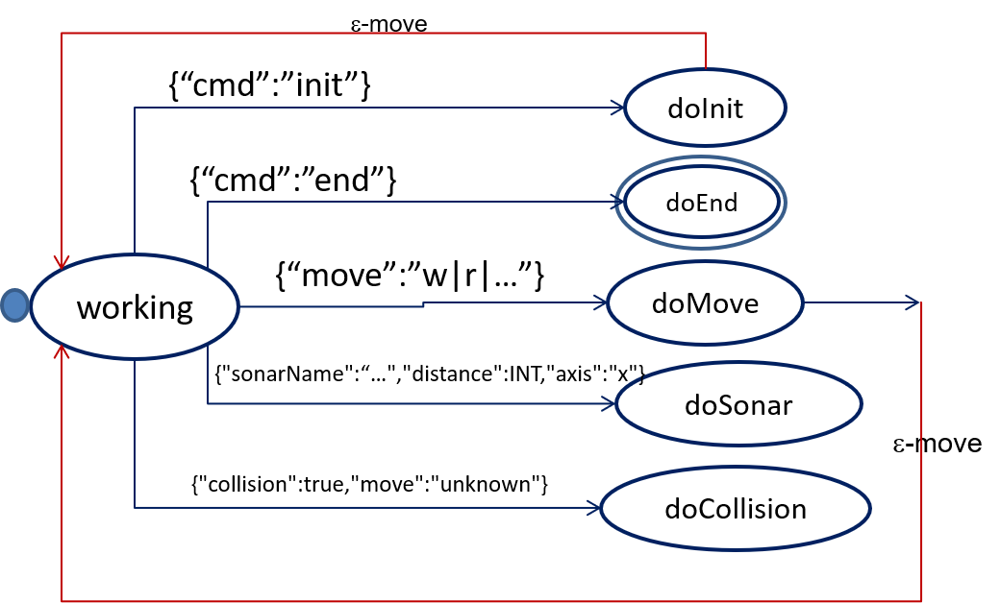

LabIss2021 | FirstActor : using KotlinActors to control a (virtual)robot
Introduction
The virtual robot introduced in
it.unibo.virtualRobot2020\userDocs\VirtualRobot2021.html
is just an example of a robot built according to some specific technology.
But, an important goal (
non-functional requirement)
of a software system designer should be that of making the code of a robot application
as much independent as possible from the robot technology, in order to make it easier the substitution of a robot type with another.
Kotlin actors help us to achieve such a goal, by providing in a quite natural way a
more abstract layer of reasoning.
Let us report, as an example, an actor written in Kotlin that sends commands to our
RobotService:
Towards standards in messaging
We note that the interaction with the
RobotService requires
the usage of messages of type
ApplMessage.kt
that requires, besides a
MSGID and a
CONTENT, also the specification
a
name for the
SENDER and a name for the
RECEIVER.
The external representation is a String written with the syntax of a
Prolog Term with 5 arguments:
msg( MSGID, MSGTYPE, SENDER, RECEIVER, CONTENT, SEQNUM )
The class
ApplMessage.kt
defines, from now on, a standard reference for our message-based applications.
In general, we will distinguish among (at least) three 'layers' of standards in messaging:
The behavior of the
robotActorTry.kt
can be modelled as a a
message-driven
Finite State Machine
where each
state is mapped into a
function whose body specifies the
actions to be executed in that state.
while( state == "working" ){
var msg = channel.receive()
val msgJson = JSONObject(msg)
var input = msgJson.keys().next()
when( input ){
"cmd" -> doCmd(msgJson.getString("cmd"))
"move" -> doMove(...)
"sonarName" -> doSonar(msg)
"collision" -> doCollision(msg)
else -> println("NO HANDLE for $msg")
}
}
|

|
In the version, the KotlinActor
robotActorTry.kt handles messages
in the form of JSON objects:
- {"cmd":"init"}: starts its job
- {"cmd":"end"}: terminates its job
- {"collision" : "...", "move": "..."}: 'reacts' to a collision message sent by the WEnv
- {"sonarName": "...", "distance": ..., "axis": "..." }: 'reacts' to a message sent by the WEnv when a scene-sonar detects the robot
- {"robotmove":"MOVE", "time":T}: sends a move-command to the robot.
Since the
RobotService understand messages represented in
the form of
ApplMessage.kt,
the move-command must be written in the proper way. For example:
msg(robotmove,dispatch,actortry,stepRobot,{"robotmove":"moveForward"@ "time": 350},1)
Note that now:
The KotlinActor
InputReader.kt
handles the messages
(strings that represent an
ApplMessage.kt )
sent by the
RobotService; for example
msg(endmove,dispatch,stepRobot,ctxServer,{"collision" : "true"@"move": "moveForward"},5)
msg(endmove,dispatch,stepRobot,ctxServer,{"endmove" : "false"@"move": "moveForward"},6)
msg(supportInfo,dispatch,support,observer,{"sonarName":"sonar2"@"distance":7@"axis":"x"},0) }
The KotlinActor
InputReader sends to the
robotActorTry
the content of each received message
(a string in JSON form) to the
ApplMessage.kt.
Thus, it works as a (remote) observer of the
RobotService
that updates
robotActorTry as an 'observer'
of the
InputReader itself.
A new (abstract) component
The abstract class
ActorBasicKotlin.kt
defines the properties of new abstraction that (from now on) can be used as the father of all our actors.